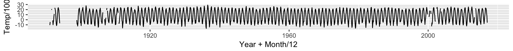

File structure is a tree

- a file is in a folder
- a folder consists of files and folders
Heike Hofmann
xelatex not installed or path not set.tar.gz) - how do we get to the files?untar in RI am assuming that the downloaded tar.gz file is placed in a data folder one level above this file. Then we use untar to create a folder (which we rename to ushcn afterwards) in the data folder that contains all of the extracted files. Note that in the code chunk cache is set to TRUE. That means that as long we don’t change the code, it will not be executed again.
untar("../data/ushcn.tavg.latest.raw.tar.gz")
system("mv ../data/ushcn.v2.5.5.* ../data/ushcn")tavg.tavg <- function(station="H00132999") {
require(tidyverse)
# get the right file name
filename <- paste0("../data/ushcn/US",station,".raw.tavg")
# read the file from fixed width format
temps <- read_fwf(filename,
col_positions = fwf_positions(
start=c( 1,13, rep(16+9*0:11, each=4) + c(1,7,8,9)),
end =c(11,16, rep(16+9*0:11, each=4) + c(6,7,8,9))))
# name the variables
names(temps) <- c("Station", "Year",
paste0(rep(c("Value","DMflag", "QCflag", "DSflag"), 12),
rep(1:12, each=4)))
# get all the ValueXX variables into a variable called Temp
# and make a Month variable from the column names
temps <- temps %>% gather(key=Month, value = Temp, starts_with("Value")) %>%
select(Station, Year, Month, Temp) %>%
mutate(
Temp = replace(Temp, Temp == -9999, NA), # -9999 are missing values
Month = as.numeric(gsub("Value", "", Month)) # Months are now just numbers from 1 to 12
)
temps # return the long and skinny data
}storm <- tavg("H00137979") # weather station in Storm Lake, IA
head(storm)## # A tibble: 6 × 4
## Station Year Month Temp
## <chr> <int> <dbl> <int>
## 1 USH00137979 1891 1 NA
## 2 USH00137979 1892 1 -994
## 3 USH00137979 1893 1 -1154
## 4 USH00137979 1898 1 NA
## 5 USH00137979 1899 1 -720
## 6 USH00137979 1900 1 -432There’s lots of ways to visualize the data - the time series is really long, so we need to pick the aspect ratio carefully to get an idea of the seasonal trends.
library(ggplot2)
storm %>% ggplot(aes(x = Year+Month/12, y = Temp/100)) + geom_line()## Warning: Removed 1 rows containing missing values (geom_path).
stations <- library(tidyverse)
stations <- read_fwf("https://raw.githubusercontent.com/Stat585-at-ISU/materials/master/data/ushcn-v2.5-stations.txt",
col_positions = fwf_positions(
start=c(1,3, 13,22,33,39,42,73,80,87,94),
end =c(2, 11,20,30,37,40,71,78,85,92,95)))## Parsed with column specification:
## cols(
## X1 = col_character(),
## X2 = col_character(),
## X3 = col_double(),
## X4 = col_double(),
## X5 = col_character(),
## X6 = col_character(),
## X7 = col_character(),
## X8 = col_character(),
## X9 = col_character(),
## X10 = col_character(),
## X11 = col_integer()
## )names(stations) <- c("Country code", "Station ID",
"Latitude", "Longitude", "Elevation", "State",
"Name", "Comp1", "Comp2", "Comp3", "UTC offset")
stations$Elevation <- as.numeric(stations$Elevation)
# check that the formats are correct
stations %>% glimpse()## Observations: 1,218
## Variables: 11
## $ Country code <chr> "US", "US", "US", "US", "US", "US", "US", "US", "...
## $ Station ID <chr> "H00011084", "H00012813", "H00013160", "H00013511...
## $ Latitude <dbl> 31.0581, 30.5467, 32.8347, 32.7017, 31.8700, 34.7...
## $ Longitude <dbl> -87.0547, -87.8808, -88.1342, -87.5808, -86.2542,...
## $ Elevation <dbl> 25.9, 7.0, 38.1, 67.1, 132.0, 164.6, 243.8, 187.5...
## $ State <chr> "AL", "AL", "AL", "AL", "AL", "AL", "AL", "AL", "...
## $ Name <chr> "BREWTON 3 SSE", "FAIRHOPE 2 NE", "GAINESVILLE LO...
## $ Comp1 <chr> "------", "------", "011694", "------", "------",...
## $ Comp2 <chr> "------", "------", "------", "------", "------",...
## $ Comp3 <chr> "------", "------", "------", "------", "------",...
## $ UTC offset <int> 6, 6, 6, 6, 6, 6, 6, 6, 6, 6, 6, 6, 6, 6, 6, 7, 7...The next command takes a moment (or five minutes), so we’ll turn on caching again. The result is one big dataset of all monthly temperatures in the US between 1880 and now
We save it in a binary file and push it to the repo:
alldata <- stations$`Station ID` %>% purrr::map_df(tavg)
alldata <- na.omit(alldata)
dim(alldata)## [1] 1622006 4saveRDS(alldata, "../data/temps.rds")File paths: local (or relative) and global (or absolute) file references
/ root directory, i.e. root of the tree at the top~ short cut for user’s home directory, usually something like /Users/heike. current directory.. parent directory of the current directoryGlobal file references start at the root and then navigate to the location, e.g. /www.server.com/dayclass/SmithMary/index.html, C:\\System\User\Myname\Files, ~/Desktop/Downloads
Relative file references start from the current directory and navigate from there to the location, e.g.: index.html is a file in the current directory (same as ./index.html) ../SmithMary/index.html starts goes to the parent directory, then into folderSmithMary, i.e. starts from inside folder SkyJohn.
In RMarkdown files or your own websites: